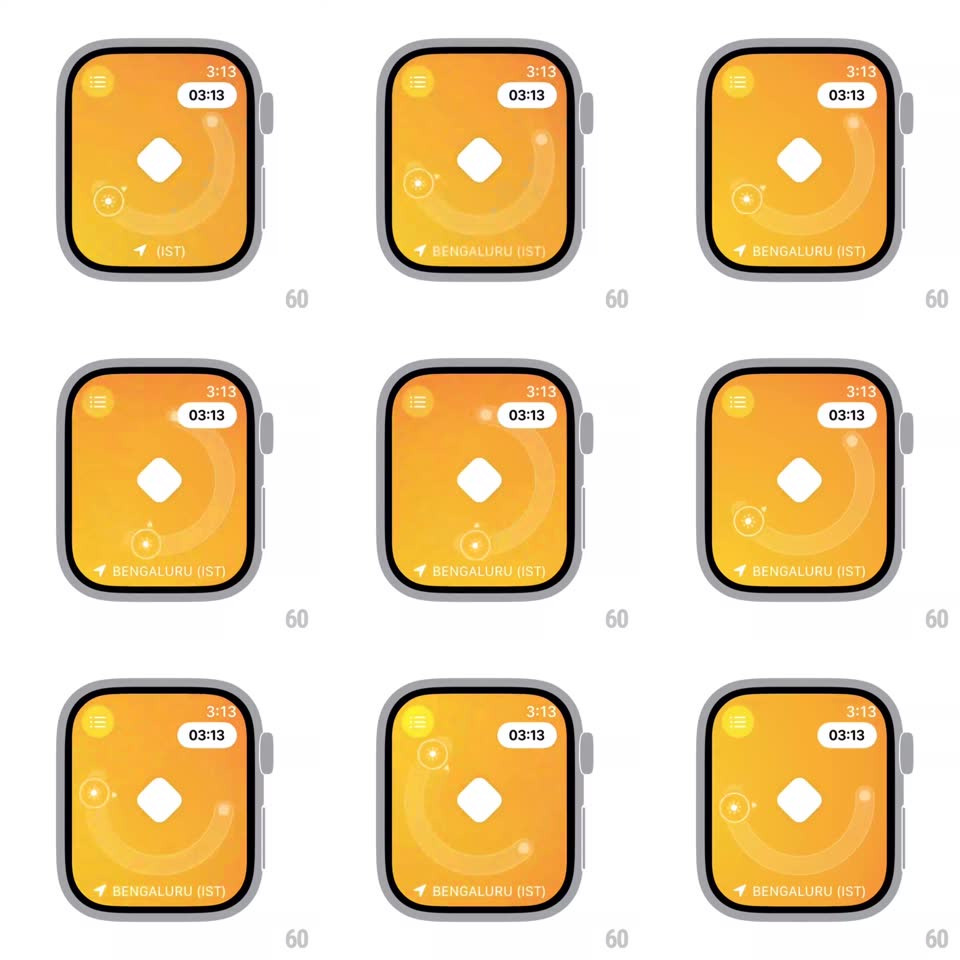

Media
Frame-by-frame

Rebuild this interaction 1:1: Sunlit's watchOS sun tracker - on an orange watch face, a white diamond sun marker glides along a curved daylight arc in response to device tilt (gyroscope), with a time pill, location label, and sun-glyph chrome that parallax subtly.

Rebuild this interaction 1:1: Sunlit's watchOS sun tracker - on an orange watch face, a white diamond sun marker glides along a curved daylight arc in response to device tilt (gyroscope), with a time pill, location label, and sun-glyph chrome that parallax subtly. ## Integration Integration: stack-agnostic spec - springs given as stiffness/damping, timed motions as duration + curve; map every value to your framework and animation library of choice. ## Scene Apple Watch screen: orange gradient, glowing sun glyph top-left, time pill "03:13" top-center, curved arc of faint dots spanning the face, a solid white diamond as the sun marker, a small compass/satellite glyph lower-left, location "BENGALURU (IST)" with an arrow bottom. ## Motion spec Pattern: gyroscope-driven marker on a fixed arc. - On appear: the face fades in from black with the sun glyph glowing up (400ms); the diamond settles onto the arc with a soft spring (~260/22, ~400ms). - Tilting the watch moves the diamond along the arc - roll maps to arc progress (clamped at the arc ends), pitch adds a small perpendicular offset (~8px); motion is smoothed (low-pass ~120ms) so the marker glides, never jitters. - The arc dots and background glow parallax at ~15% of the marker's travel, opposite direction, for depth. - The sun glyph's rays rotate slowly (~20s per revolution) independent of tilt; the time pill updates live. - At the arc ends the diamond eases to a stop with elastic resistance (last 10% of travel stretched 0.4x). ## Calibration - Marker position derives from tilt, not time - holding the watch still freezes it mid-arc. - Parallax layers keep pixel-perfect alignment at rest. ## Reduced motion Marker jumps directly to the smoothed tilt position; parallax and ray rotation off. ## Don't miss - The diamond is rotated 45 degrees and stays crisp - it is the only fully opaque element on the arc. - Location and time chrome stay pinned; only the arc system responds to tilt.